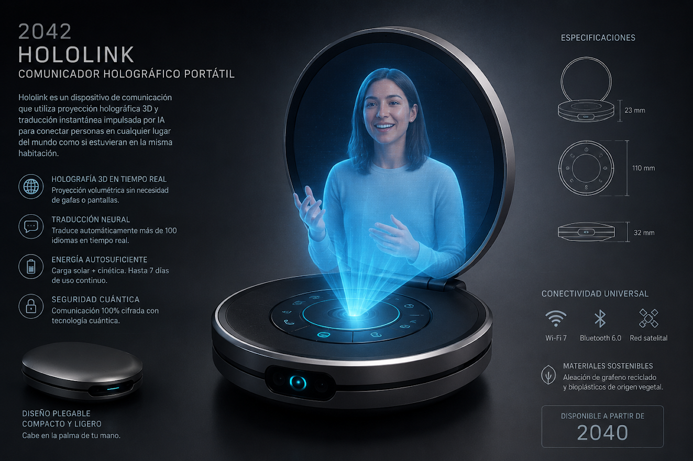
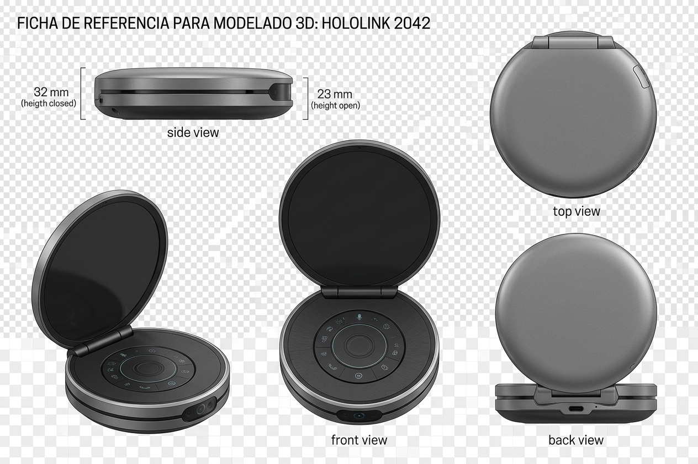

Captura espacial
Un conjunto de cámaras y sensores de profundidad reconstruye rostro, postura y gestos como volumen tridimensional dinámico.
Comunicación espacial · 2042
La presencia deja de caber en una pantalla.
HoloLink es un comunicador holográfico portátil que proyecta en tiempo real la imagen volumétrica de una persona para conversar, colaborar y compartir un espacio común a distancia.
AR disponible en iPhone y iPad compatibles con Apple Quick Look.

02 / premisa
Durante décadas, las videollamadas comprimieron la comunicación humana a un rectángulo. HoloLink aparece cuando la captura espacial, la conectividad de muy baja latencia y el procesamiento de IA alcanzan una escala suficientemente pequeña y eficiente para salir del estudio y entrar en la palma de la mano.
03 / el objeto
Cerrado, HoloLink funciona como un objeto compacto de comunicación personal. Al desplegarse, su tapa actúa como superficie óptica y de calibración, mientras la base captura el entorno inmediato y genera un volumen de proyección estable frente al usuario.
No sustituye el encuentro físico. Su propósito es reducir la sensación de separación en situaciones donde viajar resulta lento, costoso o innecesario, desde conversaciones familiares hasta revisiones de diseño, asistencia remota y colaboración internacional.

04 / modelo interactivo
Arrastra para rotar · desplaza o pellizca para acercar.
Preparando visor 3D…
05 / sistema
Un conjunto de cámaras y sensores de profundidad reconstruye rostro, postura y gestos como volumen tridimensional dinámico.
El sistema completa zonas ocluidas, estabiliza el movimiento y optimiza la geometría antes de transmitirla.
La conexión prioriza mirada, voz y gestualidad para mantener la conversación fluida incluso cuando cambia el ancho de banda.
Una matriz óptica de campo luminoso genera la percepción de profundidad sin gafas dentro de un volumen de interacción cercano.
Micrófonos direccionales, seguimiento de mirada y traducción contextual permiten conversar sin aprender una interfaz nueva.
06 / tecnología
El salto no es una pantalla mejor. Es hacer portátil una infraestructura que hoy todavía requiere cámaras, cómputo y óptica separados.
07 / historia
La videollamada es ubicua, pero la presencia sigue limitada por cámara, encuadre y pantalla.
La captura volumétrica se vuelve más accesible y la IA reduce el costo computacional de reconstruir personas en 3D.
Óptica compacta, redes de latencia mínima y chips especializados permiten miniaturizar el sistema.
La comunicación holográfica sale de salas especializadas y se convierte en un objeto personal portátil.
110 mm de diámetro. Un objeto de bolsillo que despliega una escena de comunicación frente al usuario.
08 / realidad aumentada
En iPhone o iPad compatible, Quick Look abre el modelo USDZ y permite visualizar HoloLink a escala dentro del entorno real.